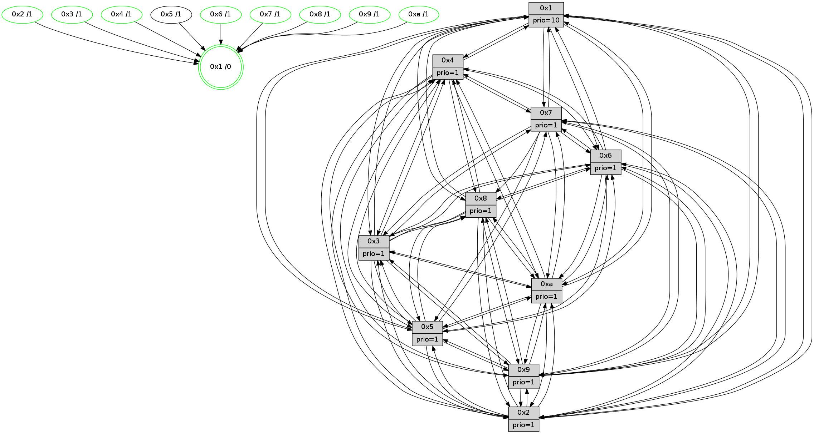

>> << IDX [start] -100 -25 -5 +0 +5 +25 +100 [1430.09816599]
 Previous packets
----------------------------------------------------------------------
1425.369378 beacon01(faad) #0 coord=01,02,03,04,05,06,07,0a,09,08 cycle=688.0ms assoc
-- color-indic=1 64 c1 a8
1425.379360 beacon02(faad) #0 coord=01,02,03,04,05,06,07,0a,09,08 cycle=688.0ms assoc 64 52 99
1425.389359 beacon03(faad) #0 coord=01,02,03,04,05,06,07,0a,09,08 cycle=688.0ms assoc 64 28 d4
1425.399360 beacon04(faad) #0 coord=01,02,03,04,05,06,07,0a,09,08 cycle=688.0ms assoc 64 5f 3e
1425.409360 beacon05(faad) #0 coord=01,02,03,04,05,06,07,0a,09,08 cycle=688.0ms assoc 64 25 73
1425.419360 beacon06(faad) #0 coord=01,02,03,04,05,06,07,0a,09,08 cycle=688.0ms assoc 64 ab a4
1425.429364 beacon07(faad) #0 coord=01,02,03,04,05,06,07,0a,09,08 cycle=688.0ms assoc 64 d1 e9
1425.439367 beacon0a(faad) #0 coord=01,02,03,04,05,06,07,0a,09,08 cycle=688.0ms assoc 64 a0 e2
1425.459367 beacon08(faad) #0 coord=01,02,03,04,05,06,07,0a,09,08 cycle=688.0ms assoc 64 54 78
1425.470858 [Hello(5): seq=909 sym=7,6,4,3,1,9,8,10,2 sysInfo=hasWarning stat=7:10,6,1,1/6:8,15,15,5/4:15,12,8,0/3:12,13,13,2/1:0,3,2,0/9:14,7,0,11/8:13,4,7,5/10:15,4,6,9/2:0,13,11,7]
1425.475351 [Hello(3): seq=909 sym=1,7,6,2,4,8,9,10,5 sysInfo=hasWarning stat=1:13,10,14,0/7:12,0,15,15/6:1,13,7,2/2:0,2,0,0/4:3,8,2,14/8:4,0,8,6/9:15,10,12,1/10:7,5,2,5/5:9,2,0,1]
1425.478452 [Color(9) seq=468 @0:0 prio=1]
1425.480374 [Color(10) seq=498 @0:0 prio=1]
1425.483769 [Hello(2): seq=905 sym=4,5,7,6,3,9,8,10,1 sysInfo=hasWarning stat=4:10,3,11,14/5:1,10,2,3/7:9,1,14,2/6:0,2,1,1/3:6,11,2,0/9:13,14,8,10/8:10,0,7,13/10:9,4,7,11/1:7,13,6,0]
1425.487890 [Color(2) seq=485 @0:0 prio=1]
1425.490321 [Hello(6): seq=909 sym=3,2,5,4,7,9,8,10,1 sysInfo=hasWarning stat=3:3,9,4,0/2:6,12,3,0/5:5,5,7,4/4:14,0,12,9/7:4,3,8,0/9:4,11,15,11/8:13,9,2,7/10:15,2,8,13/1:1,15,11,1]
1425.494581 [Color(3) seq=538 @0:0 prio=1]
1425.499043 [Color(6) seq=541 @0:0 prio=1]
----------------------------------------------------------------------
1426.157509 beacon01(faad) #0 coord=01,02,03,04,05,06,07,0a,09,08 cycle=688.0ms assoc
-- color-indic=1 64 7d ad
1426.167491 beacon02(faad) #0 coord=01,02,03,04,05,06,07,0a,09,08 cycle=688.0ms assoc 64 ee 9c
1426.177492 beacon03(faad) #0 coord=01,02,03,04,05,06,07,0a,09,08 cycle=688.0ms assoc 64 94 d1
1426.187491 beacon04(faad) #0 coord=01,02,03,04,05,06,07,0a,09,08 cycle=688.0ms assoc 64 e3 3b
1426.197490 beacon05(faad) #0 coord=01,02,03,04,05,06,07,0a,09,08 cycle=688.0ms assoc 64 99 76
1426.207493 beacon06(faad) #0 coord=01,02,03,04,05,06,07,0a,09,08 cycle=688.0ms assoc 64 17 a1
1426.217492 beacon07(faad) #0 coord=01,02,03,04,05,06,07,0a,09,08 cycle=688.0ms assoc 64 6d ec
1426.227497 beacon0a(faad) #0 coord=01,02,03,04,05,06,07,0a,09,08 cycle=688.0ms assoc 64 1c e7
1426.247498 beacon08(faad) #0 coord=01,02,03,04,05,06,07,0a,09,08 cycle=688.0ms assoc 64 e8 7d
1426.259691 [Hello(9): seq=853 sym=2,5,3,4,7,6,8,10,1 sysInfo=hasWarning stat=2:5,12,2,11/5:8,10,3,8/3:3,1,13,4/4:15,11,9,3/7:14,5,11,5/6:5,3,1,15/8:13,3,9,7/10:13,3,6,0/1:0,11,9,1]
1426.263055 [Color(1) seq=589 @0:0 prio=10]
1426.264877 [Hello(7): seq=909 sym=2,3,5,6,4,8,9,10,1 sysInfo=hasWarning stat=2:7,7,11,4/3:15,14,14,3/5:13,7,13,3/6:14,11,11,12/4:5,3,10,2/8:2,3,1,0/9:1,1,10,2/10:13,14,3,7/1:5,0,7,0]
1426.267390 [Hello(8): seq=853 sym=5,2,3,9,6,4,10,1 sysInfo=hasWarning stat=5:11,10,8,1/2:2,1,2,12/3:11,2,8,4/9:11,8,10,5/6:2,1,2,0/4:11,5,5,2/10:8,6,0,5/1:13,14,12,0]
1426.269931 [Color(7) seq=437 @0:0 prio=1]
1426.271823 [Color(8) seq=508 @0:0 prio=1]
1426.273188 PARSE ERROR************************
Traceback (most recent call last):
File "PacketAnalysis.py", line 167, in showOperaPacket
structPacket = OperaPacketParse.parsePacket(rawPacket)
File "../../pkg-python/HipSens/Core/OperaPacketParse.py", line 461, in parsePacket
return parseHelloMessage(data)
File "../../pkg-python/HipSens/Core/OperaPacketParse.py", line 127, in parseHelloMessage
assert struct.calcsize("H")*len(neighAddrList) == len(linkList)
AssertionError
48 34 0a 00 03 4a 00 02 02 12 06 00 02 00 03 00 08 00 07 00 05 00 09 00 04 00 01 00 53 04 00 02 00 00 4c 12 53 88 06 12 fb 08 44 0a a2 71 1f df 13 b8 3e e5 16 d0 4c 78
1426.283049 [Hello(4): seq=909 sym=5,8,6,2,3,9,7,10,1 sysInfo= stat=5:10,6,10,2/8:5,12,4,1/6:4,8,4,0/2:13,9,12,1/3:0,4,5,15/9:7,13,0,2/7:14,10,3,0/10:0,7,5,14/1:8,7,11,1]
1426.285879 [Color(4) seq=448 @0:0 prio=1]
----------------------------------------------------------------------
1426.945640 beacon01(faad) #0 coord=01,02,03,04,05,06,07,0a,09,08 cycle=688.0ms assoc
-- color-indic=1 64 49 b5
1426.955623 beacon02(faad) #0 coord=01,02,03,04,05,06,07,0a,09,08 cycle=688.0ms assoc 64 da 84
1426.965623 beacon03(faad) #0 coord=01,02,03,04,05,06,07,0a,09,08 cycle=688.0ms assoc 64 a0 c9
1426.975623 beacon04(faad) #0 coord=01,02,03,04,05,06,07,0a,09,08 cycle=688.0ms assoc 64 d7 23
1426.985622 beacon05(faad) #0 coord=01,02,03,04,05,06,07,0a,09,08 cycle=688.0ms assoc 64 ad 6e
1426.995624 beacon06(faad) #0 coord=01,02,03,04,05,06,07,0a,09,08 cycle=688.0ms assoc 64 23 b9
1427.005626 beacon07(faad) #0 coord=01,02,03,04,05,06,07,0a,09,08 cycle=688.0ms assoc 64 59 f4
1427.015629 beacon0a(faad) #0 coord=01,02,03,04,05,06,07,0a,09,08 cycle=688.0ms assoc 64 28 ff
1427.035628 beacon08(faad) #0 coord=01,02,03,04,05,06,07,0a,09,08 cycle=688.0ms assoc 64 dc 65
1427.047425 [Hello(5): seq=910 sym=7,6,4,3,1,9,8,10,2 sysInfo=hasWarning stat=7:11,7,1,1/6:9,0,15,5/4:0,13,8,0/3:13,14,13,2/1:0,4,2,0/9:15,8,0,11/8:14,5,7,5/10:0,5,6,9/2:1,14,11,7]
1427.051419 [Color(9) seq=469 @0:0 prio=1]
1427.052961 [Color(10) seq=499 @0:0 prio=1]
1427.054950 [Hello(2): seq=906 sym=4,5,7,6,3,9,8,10,1 sysInfo=hasWarning stat=4:11,4,11,14/5:2,10,2,3/7:10,2,14,2/6:1,3,1,1/3:6,12,2,0/9:14,14,8,10/8:11,1,7,13/10:10,4,7,11/1:7,14,6,0]
1427.057840 [Hello(1): seq=819 sym=4,2,9,5,10,3,8,6,7 sysInfo=coloring-mode-on,ColoringModeRequestCalled stat=4:0,1,13,4/2:1,5,6,5/9:15,10,6,2/5:0,6,9,9/10:2,12,9,8/3:6,4,9,11/8:15,9,8,4/6:8,15,7,2/7:0,14,14,2]
1427.061137 [Hello(6): seq=910 sym=3,2,5,4,7,9,8,10,1 sysInfo=hasWarning stat=3:3,9,4,0/2:6,12,3,0/5:6,5,7,4/4:15,1,12,9/7:5,4,8,0/9:5,11,15,11/8:14,10,2,7/10:0,2,8,13/1:1,0,11,1]
1427.064276 [Color(6) seq=542 @0:0 prio=1]
1427.066369 [Color(2) seq=486 @0:0 prio=1]
1427.072954 [Hello(3): seq=910 sym=1,7,6,2,4,8,9,10,5 sysInfo=hasWarning stat=1:13,11,14,0/7:13,1,15,15/6:1,14,7,2/2:0,2,0,0/4:4,9,2,14/8:5,1,8,6/9:0,10,12,1/10:8,5,2,5/5:10,2,0,1]
1427.077683 [Color(3) seq=539 @0:0 prio=1]
----------------------------------------------------------------------
1427.733774 beacon01(faad) #0 coord=01,02,03,04,05,06,07,0a,09,08 cycle=688.0ms assoc
-- color-indic=1 64 f5 b0
1427.743756 beacon02(faad) #0 coord=01,02,03,04,05,06,07,0a,09,08 cycle=688.0ms assoc 64 66 81
1427.753756 beacon03(faad) #0 coord=01,02,03,04,05,06,07,0a,09,08 cycle=688.0ms assoc 64 1c cc
1427.763757 beacon04(faad) #0 coord=01,02,03,04,05,06,07,0a,09,08 cycle=688.0ms assoc 64 6b 26
1427.773757 beacon05(faad) #0 coord=01,02,03,04,05,06,07,0a,09,08 cycle=688.0ms assoc 64 11 6b
1427.783757 beacon06(faad) #0 coord=01,02,03,04,05,06,07,0a,09,08 cycle=688.0ms assoc 64 9f bc
1427.793757 beacon07(faad) #0 coord=01,02,03,04,05,06,07,0a,09,08 cycle=688.0ms assoc 64 e5 f1
1427.803763 beacon0a(faad) #0 coord=01,02,03,04,05,06,07,0a,09,08 cycle=688.0ms assoc 64 94 fa
1427.823762 beacon08(faad) #0 coord=01,02,03,04,05,06,07,0a,09,08 cycle=688.0ms assoc 64 60 60
1427.834987 [Hello(10): seq=843 sym=6,2,3,8,7,5,9,4,1 sysInfo=hasWarning stat=6:9,9,3,5/2:3,2,6,0/3:9,1,11,15/8:10,0,4,4/7:1,7,2,10/5:0,13,15,1/9:8,11,3,1/4:6,15,14,3/1:1,13,6,1]
1427.840354 [Hello(7): seq=910 sym=2,3,5,6,4,8,9,10,1 sysInfo=hasWarning stat=2:8,8,11,4/3:0,15,14,3/5:14,7,13,3/6:15,12,11,12/4:6,4,10,2/8:2,4,1,0/9:2,2,10,2/10:14,15,3,7/1:6,0,7,0]
1427.844127 [Color(7) seq=438 @0:0 prio=1]
1427.845445 [Hello(4): seq=910 sym=5,8,6,2,3,9,7,10,1 sysInfo= stat=5:11,6,10,2/8:5,12,4,1/6:5,9,4,0/2:14,10,12,1/3:1,5,5,15/9:8,14,0,2/7:14,10,3,0/10:0,8,5,14/1:9,7,11,1]
1427.849851 [Color(4) seq=449 @0:0 prio=1]
1427.853500 [STC(1) #0.247 tree-change,inconsistent-stability,stable,to-color d=0]
1427.855772 [Color(1) seq=590 @0:0 prio=10]
1427.860381 [Color(8) seq=509 @0:0 prio=1]
----------------------------------------------------------------------
1428.521905 beacon01(faad) #0 coord=01,02,03,04,05,06,07,0a,09,08 cycle=688.0ms assoc
-- color-indic=1 64 31 be
1428.531888 beacon02(faad) #0 coord=01,02,03,04,05,06,07,0a,09,08 cycle=688.0ms assoc 64 a2 8f
1428.541888 beacon03(faad) #0 coord=01,02,03,04,05,06,07,0a,09,08 cycle=688.0ms assoc 64 d8 c2
1428.551889 beacon04(faad) #0 coord=01,02,03,04,05,06,07,0a,09,08 cycle=688.0ms assoc 64 af 28
1428.561889 beacon05(faad) #0 coord=01,02,03,04,05,06,07,0a,09,08 cycle=688.0ms assoc 64 d5 65
1428.571887 beacon06(faad) #0 coord=01,02,03,04,05,06,07,0a,09,08 cycle=688.0ms assoc 64 5b b2
1428.581889 beacon07(faad) #0 coord=01,02,03,04,05,06,07,0a,09,08 cycle=688.0ms assoc 64 21 ff
1428.591893 beacon0a(faad) #0 coord=01,02,03,04,05,06,07,0a,09,08 cycle=688.0ms assoc 64 50 f4
1428.611894 beacon08(faad) #0 coord=01,02,03,04,05,06,07,0a,09,08 cycle=688.0ms assoc 64 a4 6e
1428.623484 [Hello(1): seq=820 sym=4,2,9,5,10,3,8,6,7 sysInfo=coloring-mode-on,ColoringModeRequestCalled stat=4:0,1,13,4/2:1,6,6,5/9:15,10,6,2/5:0,6,9,9/10:3,12,9,8/3:7,5,9,11/8:15,10,8,4/6:9,0,7,2/7:0,14,14,2]
1428.626529 [STC(7)->1 #0.247 tree-change,inconsistent-stability,stable,to-color d=1]
1428.628637 [Hello(3): seq=911 sym=1,7,6,2,4,8,9,10,5 sysInfo=hasWarning stat=1:13,12,15,0/7:13,2,15,15/6:1,14,7,2/2:0,2,0,0/4:5,10,2,14/8:6,2,8,6/9:0,10,12,1/10:9,5,2,5/5:11,2,0,1]
1428.631134 [Hello(6): seq=911 sym=3,2,5,4,7,9,8,10,1 sysInfo=hasWarning stat=3:4,10,4,0/2:6,13,3,0/5:7,5,7,4/4:0,2,12,9/7:6,5,8,0/9:5,11,15,11/8:14,11,2,7/10:1,2,8,13/1:1,1,12,1]
1428.633877 [STC(10)->1 #0.247 tree-change,inconsistent-stability,stable,to-color d=1]
1428.635245 [STC(6)->1 #0.247 tree-change,inconsistent-stability,stable,to-color d=1]
1428.636496 [Hello(5): seq=911 sym=7,6,4,3,1,9,8,10,2 sysInfo=hasWarning stat=7:11,8,1,1/6:10,1,15,5/4:1,14,8,0/3:14,15,13,2/1:1,5,3,0/9:0,9,0,11/8:15,6,7,5/10:0,6,6,9/2:2,15,11,7]
1428.639227 [Color(6) seq=543 @0:0 prio=1]
1428.640653 [STC(9)->1 #0.247 tree-change,inconsistent-stability,stable,to-color d=1]
1428.642198 [Color(10) seq=500 @0:0 prio=1]
1428.645603 [STC(3)->1 #0.247 tree-change,inconsistent-stability,stable,to-color d=1]
1428.647544 [Color(3) seq=540 @0:0 prio=1]
1428.650506 [Hello(2): seq=907 sym=4,5,7,6,3,9,8,10,1 sysInfo=hasWarning stat=4:12,5,11,14/5:3,10,2,3/7:11,3,14,2/6:1,3,1,1/3:7,13,2,0/9:14,14,8,10/8:11,2,7,13/10:10,4,7,11/1:7,15,7,0]
1428.655264 [STC(2)->1 #0.247 tree-change,inconsistent-stability,stable,to-color d=1]
1428.657546 [Color(2) seq=487 @0:0 prio=1]
----------------------------------------------------------------------
1429.310035 beacon01(faad) #0 coord=01,02,03,04,05,06,07,0a,09,08 cycle=688.0ms assoc
-- color-indic=1 64 8d bb
1429.320017 beacon02(faad) #0 coord=01,02,03,04,05,06,07,0a,09,08 cycle=688.0ms assoc 64 1e 8a
1429.330019 beacon03(faad) #0 coord=01,02,03,04,05,06,07,0a,09,08 cycle=688.0ms assoc 64 64 c7
1429.340020 beacon04(faad) #0 coord=01,02,03,04,05,06,07,0a,09,08 cycle=688.0ms assoc 64 13 2d
1429.350018 beacon05(faad) #0 coord=01,02,03,04,05,06,07,0a,09,08 cycle=688.0ms assoc 64 69 60
1429.360018 beacon06(faad) #0 coord=01,02,03,04,05,06,07,0a,09,08 cycle=688.0ms assoc 64 e7 b7
1429.370021 beacon07(faad) #0 coord=01,02,03,04,05,06,07,0a,09,08 cycle=688.0ms assoc 64 9d fa
1429.380024 beacon0a(faad) #0 coord=01,02,03,04,05,06,07,0a,09,08 cycle=688.0ms assoc 64 ec f1
1429.400025 beacon08(faad) #0 coord=01,02,03,04,05,06,07,0a,09,08 cycle=688.0ms assoc 64 18 6b
1429.411264 [Hello(10): seq=844 sym=6,2,3,8,7,5,9,4,1 sysInfo=hasWarning stat=6:9,9,3,5/2:4,3,7,0/3:9,2,12,15/8:10,1,4,4/7:2,8,3,10/5:0,13,0,1/9:8,11,3,1/4:7,0,14,3/1:2,14,7,1]
1429.416297 [Hello(7): seq=911 sym=2,3,5,6,4,8,9,10,1 sysInfo=hasWarning stat=2:9,9,12,4/3:1,0,15,3/5:15,7,14,3/6:0,13,12,12/4:7,5,10,2/8:2,5,1,0/9:2,2,11,2/10:15,0,4,7/1:6,1,8,0]
1429.420380 [Color(7) seq=439 @0:0 prio=1]
1429.422798 [Hello(8): seq=855 sym=5,2,3,9,6,4,10,1 sysInfo=hasWarning stat=5:13,10,8,1/2:4,3,3,12/3:13,4,9,4/9:12,9,11,5/6:4,3,3,0/4:12,6,5,2/10:10,8,1,5/1:15,14,12,0]
1429.425736 [Color(1) seq=591 @0:0 prio=10]
1429.428186 [Color(8) seq=510 @0:0 prio=1]
1429.433039 [Hello(4): seq=911 sym=5,8,6,2,3,9,7,10,1 sysInfo= stat=5:12,6,10,2/8:5,13,4,1/6:6,10,5,0/2:15,11,13,1/3:2,6,6,15/9:9,15,1,2/7:14,10,3,0/10:0,9,6,14/1:9,8,12,1]
1429.438104 [Color(4) seq=450 @0:0 prio=1]